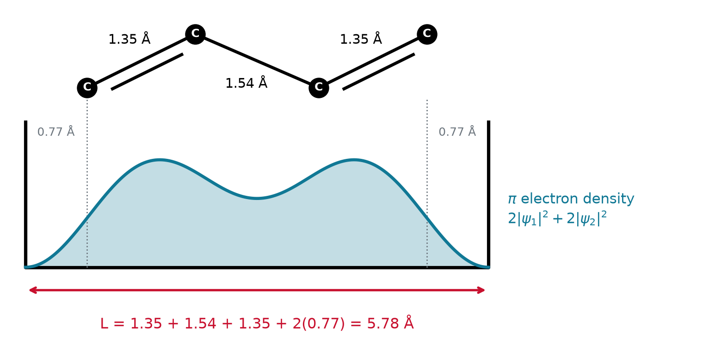
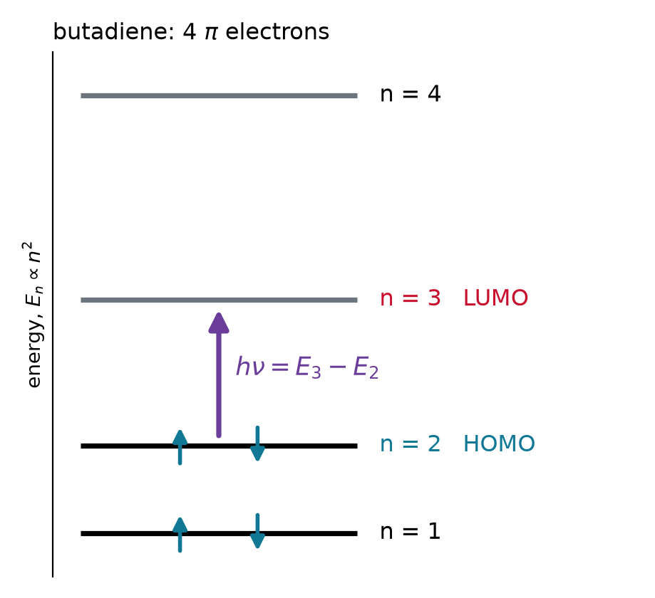
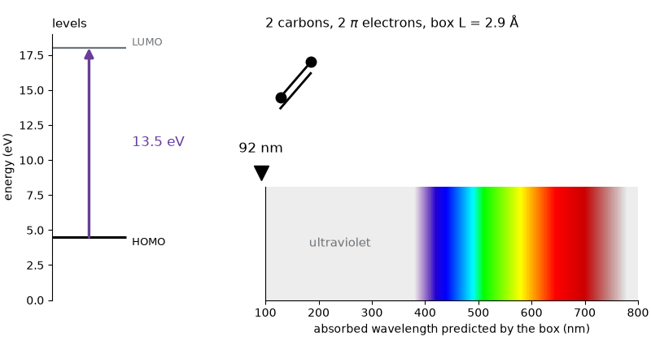
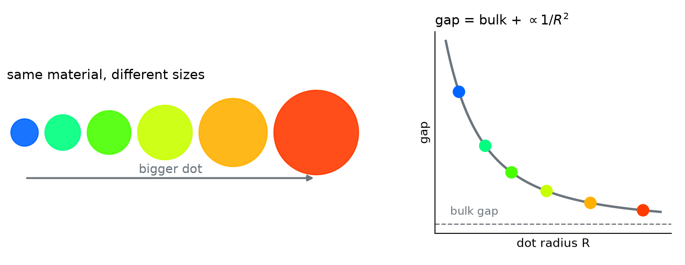

Chem 3240 · Lecture 3.3 · color from confinement


The HOMO to LUMO gap:
\Delta E = \left[\left(\tfrac{N}{2}+1\right)^2 - \left(\tfrac{N}{2}\right)^2\right]\frac{h^2}{8mL^2} = (N+1)\,\frac{h^2}{8mL^2}
Set \Delta E = hc/\lambda:
\lambda = \frac{8mc}{h}\,\frac{L^2}{N+1} \qquad\Longrightarrow\qquad \lambda\ (\text{nm}) \approx 33\,\frac{\big[L\ (\text{Å})\big]^2}{N+1}
Butadiene, CH_2=CH–CH=CH_2, has 4 \pi electrons (C=C 1.35 Å, C–C 1.54 Å). Estimate \lambda with the box ending (a) at the end carbons, (b) one carbon radius, 0.77 Å, beyond them.
\text{(a)}\quad L = 1.35 + 1.54 + 1.35 = 4.24\ \text{Å}: \qquad \lambda = 33\,\frac{(4.24)^2}{5} \approx 119\ \text{nm}
\text{(b)}\quad L = 4.24 + 2(0.77) = 5.78\ \text{Å}: \qquad \lambda = 33\,\frac{(5.78)^2}{5} \approx 220\ \text{nm}
Measured: 217 nm. The \pi cloud does not stop at the end carbons.

β-carotene, the orange of carrots, has 22 conjugated carbons and 22 \pi electrons. With the butadiene rule, L = 1.445\,N Å, predict \lambda.
L = 1.445 \times 22 = 31.8\ \text{Å}: \qquad \lambda = 33\,\frac{(31.8)^2}{23} \approx 1450\ \text{nm, infrared}
Measured: about 450 nm. It absorbs blue, so it looks orange. The box overshoots threefold.

An electron in liquid helium pushes the atoms away and sits in a cavity about 36 Å across. Treat it as a cube of side 36 Å: find the zero-point energy and the gap to the first excited level.
E_{111} = \frac{3h^2}{8mL^2} = 3\,(4.65\times10^{-21}\ \text{J}) = 1.39\times10^{-20}\ \text{J} = 87\ \text{meV}
E_{211} - E_{111} = \frac{(6 - 3)\,h^2}{8mL^2} = 87\ \text{meV}, \quad \text{to a 3-fold degenerate level}
Measured gap: about 105 meV.
A length and an electron count predict a color: N \pi electrons in a box of length L absorb at \lambda = 8mcL^2/h(N+1). The model gets butadiene within a few percent and the trend right for longer chains, overshoots when bond alternation roughens the box, and carries over to 3D, where the size of a quantum dot sets its color.
Chem 3240 · Quantum Mechanics